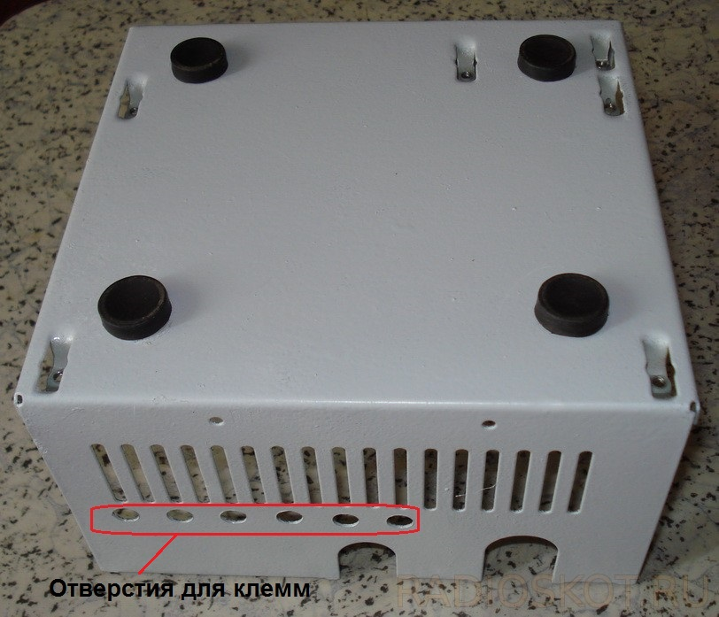
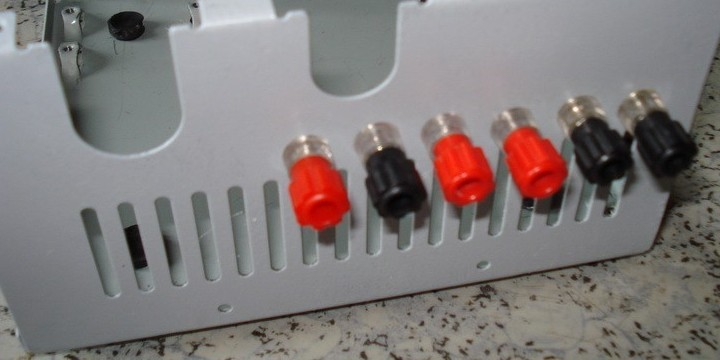
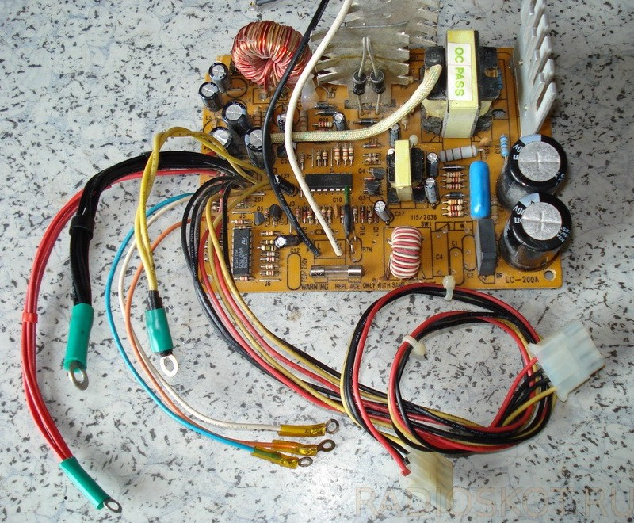
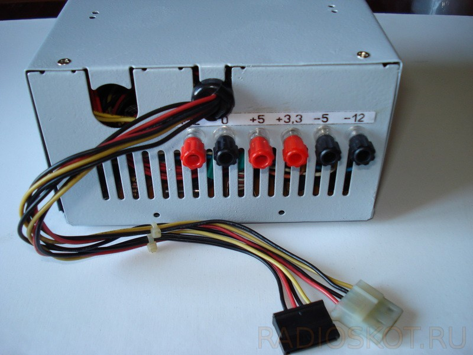
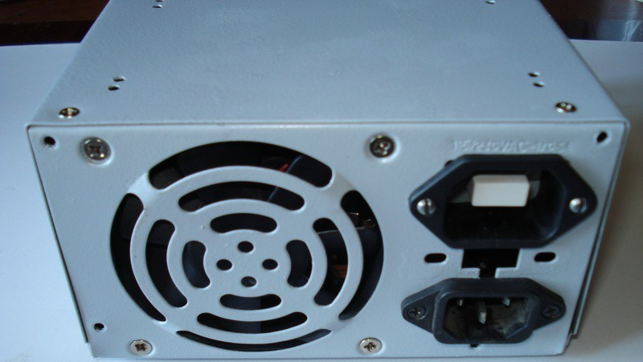

Источник питания из блока питания ПК - 1
Разбираем блок питания на отдельные узлы. Сверлим в нижней части корпуса отверстия для клемм и установки на днище резиновых ножек (рис. 1).

Рис. 1 - Дно компьютерного блока питания
Клеммы ставим на все имеющиеся напряжения: красные +12 В, +5 В, +3,3 В, а чёрные 0 В, -12 В, -5 В (рис. 2). Используя их различное сочетание, можно получить весьма широкий спектр постоянных выходных напряжений (табл. 1).

Рис. 2 - Клеммы компьютерного блока питания
Из выводных проводов нетронутыми оставим два жгута: на одном выводном жгуте оставляем разъём питания для подключения жёстких дисков c интерфейсом IDE, на другом - разъём для устройств с интерфейсом SATA. Остальные провода укорачиваем и объединяем в соответствии с цветом и выходным напряжением (рис. 3).

Рис. 3 - Модернизированные провода
Плату ставим на место, укороченные провода присоединяем к клеммам, цельные жгуты выводим наружу (рис. 4).
Затем ставим на место разъём сетевого питания и выключатель. Вентилятор установим так, чтобы он гнал воздух внутрь корпуса. Ставим верхнюю часть корпуса на место (рис. 5).

Рис. 5 - Лицевая сторона переделанного компьютерного блока питания
Кнопку включения можно устанавливаем внутри выходного разъема 220 В на задней стороне корпуса (рис. 6). Это исключает случайное включение или выключение источника питания.
{kind=link}

Рис. 6 - Обратная сторона переделанного компьютерного блока питания
Таблица соединений
| Получаем | Соединяем |
|---|---|
| 24,0 В | 12 Ви -12 В |
| 17,0 В | 12 В и -5 В |
| 15,3 В | 3,3 В и -12 В |
| 10,0 В | 5 В и -5 В |
| 8,7 В | 12 В и 3,3 В |
| 8,3 В | 3,3 В и -5 В |
| 7,0 В | 12 В и 5 В |
| 1,7 В | 5 В и 3,3 В |
Также БП стал более компактным и мобильным, поэтому применений ему будет масса - необходимость в мощном и отдельном источнике различных напряжений возникает часто.
Источники:
radioskot.ru - ИСПОЛЬЗОВАНИЕ КОМПЬЮТЕРНОГО БЛОКА ПИТАНИЯ БЕЗ ПК